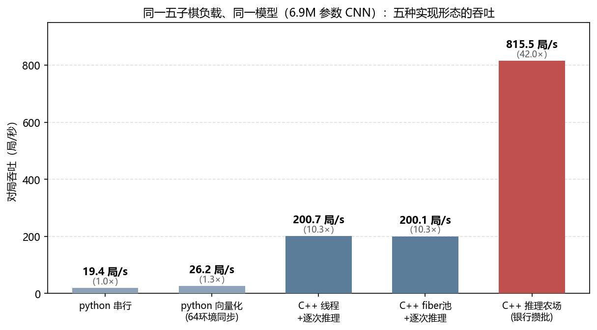
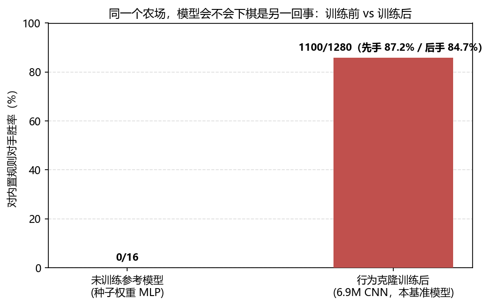

写一个 GameAdapter 接入你的游戏，剩下的并发、攒批、GPU 提交、取证——全部交给农场。
通用 C++17 游戏决策推理框架：把「大量同构对局并发推进 + 神经网络批量决策」做成游戏无关的库。面向自博弈训练、强化学习评估、演化种群评估、对局数据生成这类高吞吐负载。
自博弈 / RL 评估 / 对局生成的瓶颈几乎从不在神经网络本身，而在：每个决策一次线程唤醒的 OS 调度税、特征组装的同进程拷贝链、小批次付整批的 GPU 门票。农场把这三层做成游戏无关的机件（实测 7.5–8.7×）。
K 工人线程 + 每局一 fiber + per-worker 唤醒队列。推理等待 = 纤程让出（不睡条件变量、不进 OS 运行队列）——唤醒税归零。链-工人亲和保住 thread_local 语义；有跨让出状态的游戏装进 TLS 帧，切换点自动装卸。
N 家银行 × slots 槽 pinned、地址终身固定、每家一张专属 CUDA Graph。原子游标领号 → 组装直写槽（零同进程拷贝）→ 满座自驱发车 → 只拷前 n 行 → 异步整批回放。池容量 = 在飞上限 = 天然背压。
RW1 权重 blob 毫秒级换心（TRT ~29ms / ORT RefitWeights 真实现）——演化/评估场景一代候选免烤引擎；换心后 CUDA 图自动失效重捕，空转 fail-fast。
全原子状态机（人口恒等式 X≡0）、复活路径直方图、乘客侧三段计时、队深取证、链钟拆账——性能问题先有测量再有解释。配套 segvcatch / dbg_stack / dbg_sample 采样剖析器全家桶。
仓库自带一条一键再生的基准（tools/，docs/benchmark.md 全口径）：模型真会下棋、框架真跑得快、行为逐位等价——三件事各自有数。


全部来自真实演化/RL 产线连续战役的回灌——不是演示件。
NVIDIA（CUDA / TensorRT）+ AMD（DirectML）同进程混跑；链钉扎保证跨厂商重跑逐位一致；同一张卡拆多设备组，轻模型下独显+核显 = 单卡 1.8×。
按模型路径引擎缓存，双模型同进程共存；决策级组路由（每组独立引擎/IO/固批）；TRT population 路由——演化一代种群免散批、免 5.3MB/批 PCIe 税。
成对状态行设备常驻：输入 D2D 直填、输出批尾散射回池（不过主机）；发车段 cudaMemcpyBatchAsync 批量化；部分行 D2H 非满批大输出 -42%。
种子协议 + 行独立 + 「时序旋钮不改算术」红线：任何提速开关都有指纹门执法，FARM_FIXED_BATCH 根治 TRT tactic 翻面，Optuna 调参器（tune_farm.py）指纹违约自动判剪。
幻影行竞态根修、惊群防御、池竞态延迟零行根修、乘客契约硬化（违约=当场响亮报错而非远端死锁）、FLIGHT 死信看门狗（30s 阵亡优雅重拉）、发射站点标签埋点。
Windows 全功能面 + Linux x64（fcontext SysV 切换体）：cpu 全门 + TRT 全绿（三平台逐位同）+ ncnn，CI 双平台 × {C++17, C++20} 矩阵常驻。
构建（无 GPU 依赖，cpu 后端全链可跑）：
git clone https://github.com/SkYContact/GameInferfarm.git
cd GameInferfarm
cmake -S . -B build -G "Visual Studio 18 2026" -A x64
cmake --build build --config Release
build/Release/farm_test.exe # 确定性门 G1-G8 全绿才算数
build/Release/gomoku.exe # 五子棋范例（未训练模型即可全流程）先跑范例、不写一行接入代码：
build/Release/gomoku.exe --chains 8 --games 16 --show-board接入你的游戏 = 实现一个适配器（五子棋全量约 200 行 / 十个钩子）：
struct MyGame : inferfarm::GameAdapter {
void NewGame(uint64_t seed, bool we_first) override;
bool AdvanceToDecision() override; // 推进到决策点
void AssembleInto(SlotWriter&) override;// 特征直写槽（零拷贝）
int CollectOutputs(OutputDest*, int) override;
void ApplyResult() override; // 消费输出、推进局面
bool IsDone() override; int Outcome() override;
};
int main() {
inferfarm::FarmConfig cfg;
cfg.model.backend = "cpu"; // cpu | ort | trt
inferfarm::Farm farm;
farm.Init(cfg);
farm.RunLeg([](int chain, void*) {
return new MyGame(); // 每链一局工厂
}, nullptr);
}ITlsFrame，调度器切换点自动装卸。同一 InferBackend 接口、同一银行协议——吞吐差在提交层，行为逐位可比（ORT 与 TRT 对同一 fp32 模型指纹逐位同）。
| 后端 | 批图 | refit 换心 | 定位 |
|---|---|---|---|
cpu | — | ✓ | 无 GPU 全链验证、确定性门、CI |
ort | CUDA Graph（会话绑调度台） | ✓ RefitWeights | 不烤 TRT：调度/攒批层收益全额 |
trt | 一银行一图捕获 | ✓ ~29ms | 生产路线：提交合并 + 毫秒换心 |
另有 ncnn（Linux，radv 异构首证）与 DirectML 通道（AMD 显卡/核显直用）。推理缓存（KataGo NNCache 思想）、多设备组、population 路由均为可选模块，默认零行为差。
EnvPool 只做环境并行（推理侧仍要自己攒批）；SampleFactory 绑定算法栈；OpenSpiel 求算法广度非吞吐；KataGo 是围棋专用引擎。GameInferfarm 补的是「带你的游戏 + 你的模型，把对局吞吐外包」的推理中间层。
不。cpu 后端全链可跑（CI 常驻）；玩具尺度模型下 CPU 反而最快（GPU 每批门票是纯开销）。GPU 后端的价值在真模型尺度——设备组与异构混跑都只为那一步准备。
五子棋全量适配器约 200 行、十个钩子；未训练模型即可跑通种子协议/直写槽/银行攒批/确定性门全流程——换成你训练好的模型只改一处模型声明。
是设计目标而非口号：种子协议逐局确定、同配置复跑逐位同、跨后端指纹逐位同、跨厂商（CUDA/DML）钉扎逐位同——全部有 CI 门执法。